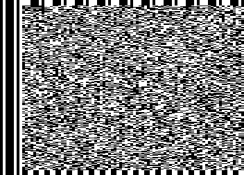
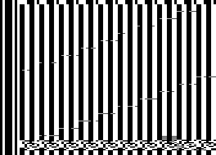
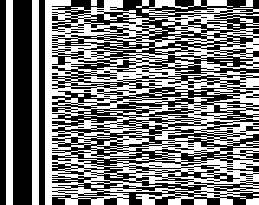
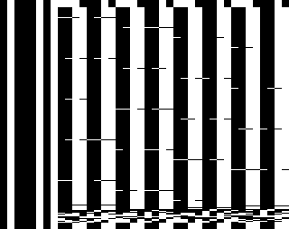
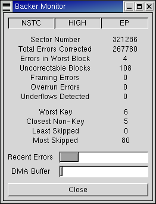

Last update: 2001/12/30
These images are for NTSC video. Most televisions can't display some number of the top and bottom lines of video so they won't actually be visible on your set. These pictures were obtained by piping the output of bkrencode into a program I've written for analyzing tape data streams and then doing a screen capture with the GIMP.
|
This first shot is of a data sector (one video field) and it's not too
helpful unless you know what you're looking at. The same output can
be generated on your television by typing
cat /dev/zero > /dev/backer/0/nhs The version 3.x format is not as much of an improvement over 2.x as 2.x was over 1.x but it is not without its merits. The error control code is now used to only correct errors in actual data, it is not wasted correcting errors in unused portions of the sector. Also, the key bytes are spread more uniformly throughout the sector. This last improvement combined with a new, more robust, algorithm for identifying the key bytes means that it is practically impossible for noise to cause a sector to be lost --- the software can accurately identify sectors even on tapes which have been badly physically damaged. |  |
| This image is more informative. This is a sector from the BOR mark and it allows you to make out the structure of the format. First, the vertical lines down the left side of the image are not part of the tape data. They are produced by the Backer hardware which prefixes each line of video with the byte 0x45. This presumably provides the means by which the hardware's bit clock is synchronized on playback. The top few lines contain the sector leader which is just filled with 0xe2 and is used to pad out the first few, unusable, lines of video. Likewise the bottom few lines contain the sector trailer which also pads out unusable lines but with 0x33. The key bytes can be seen scattered diagonally through the sector and are used to find sectors in the data stream. The vertical bars filling the bulk of the image are the filler bytes (0x33) used in BOR and EOR sectors and would contain data if this were a normal data sector. The parity bytes are at the bottom, filling several lines immediately above the trailer. Finally the sector header can be made out as four bytes, here all 0, appearing just above the parity bytes towards the right side of the video frame. |  |
|
Here's what a low density data sector looks like. You can get output like
this by typing
cat /dev/zero > /dev/backer/0/nls |  |
| And here's a sector from the low density BOR mark. |  |
| This shows bkrmonitor after a 545 million byte recording that had
been made in EP mode was recovered from tape. As you can see, the raw
recording could not be recovered from tape completely error-free as there
were 108 uncorrectable data blocks. However, this recording was made
using the new bkrenhanced utility
which had no trouble filling in the lost sectors as can be seen from it's
output below
bkrenhanced: DECODING at 92.2% efficiency This shows that 108 sectors of the 321045 data sectors in the recording needed to be corrected which is a mean error rate of about 3*10-4. We also see that no sector group required more than 3 of its 255 sectors to be replaced. bkrenhanced's error control code can replace up to 20 sectors in each group so there appears to be plenty of headroom as one would expect given the mean error rate and the code rate. |  |